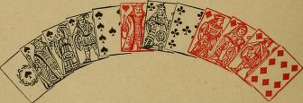
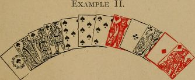
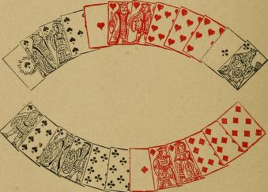
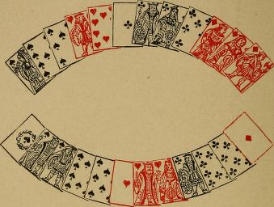
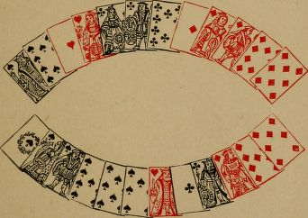

Calling
Introductory
Calling is not such a simple matter as at first sight appears.
Your object is to reckon all you can (exceptas will be pointed out), and at the same time not to expose your hand more than necessary,as by informing your adversary of the contents of your hand, you materially assist him in playing the cards.
After taking in, and before calling, look through your hand, and, if your memory is at fault, through your discard also, to ascertain what you have good, or equal, or what remains good against you.
Calling the point
You should not thoughtlessly call your best suit for point, when you have two points. You should consider which of the two it is to your advantage to declare.
For example:-You (elder hand) have king,queen, knave, eight of hearts; and ace, queen,ten, eight of clubs. You call four cards, allowed to be good. You propose to attack in hearts;you should therefore declare that suit for point.
To carry the illustration a step further. Your other cards are ace of spades, and three diamonds.
You have put out knave, nine, eight of spades,and two diamonds.
You know, or ought to know, that thirty-eight, in hearts, is good against the cards. You call four cards, and are told that four cards are equal. Your point in clubs makes thirty-nine.But having ascertained that thirty-eight is good,you declare the point in hearts. Your adversary may then suppose that you are out in clubs, and may therefore play the cards to a disadvantage.
It may be asked, If you know your point is good, why not declare it at once?
The answer is that, when you may hold the same number of cards in more than one suit, it's generally advisable to call the number of cards of your point, even though good against the cards,in hopes of compelling your adversary to discover some portion of his hand or discard by his reply. Thus: You have forty-seven in one suit, and might have had forty-five in another. The best point the younger hand can hold is forty-six. If to your call of "Five cards" he replies, "Equal", you know five cards in his hand; if he replies, "Good", you know he has discarded from his point.
Again: - If any four-card point which the younger hand can hold must be good, and you have a point of thirty-one, you should call three cards, though holding four. You may thus induce the younger hand to believe you have three cards in each suit, and may consequently gain several points in play.
Replying to the call of point
When you are younger hand, and the elder calls a number of cards for point, equal to yours, you should not declare the equality if his point must be good.
Thus: The elder hand calls, "Five cards". You have already noted that the only five-card suit he can hold is ace, queen, knave, ten, eight of hearts,making forty-nine. Your five-card suit (ace, queen,knave, ten, seven) only makes forty-eight You should not reply, " Equal" to the call of five cards,but should at once allow five cards to be good.
When you reply, "Not good" to a point, you should at the same time observe in which suit the call is.
For example: - Elder hand calls five cards.You have already seen that the only five-card point he can hold is in hearts. You, therefore,know five cards in his hand ; this knowledge maybe of great use to you in playing the cards.
Or: - Elder hand calls five cards which are equal. He may then decline to say what they make, if he knows your five cards must be better than his. Nevertheless, if he can only hold one five-card point, you know what the cards are.Or, he may declare that his cards make, say, forty-four. Forty-four is not good; all the same,you know that his point consists of five cards, without an ace, and ending in a tierce minor. You will thus probably be able to tell five cards in your opponent's hand.
The following table, if learnt by heart, will facilitate a knowledge of the cards of a point which is not good :
| A point of 34 must contain | 7, 8, 9, and a tenth card |
|---|---|
| 35 | 7, 8, and two tenth cards or |
| 7, 8, 9 and an ace | |
| 36 | 7, 9, and two tenth cards or |
| 7, 8, a tenth card, and an ace | |
| 37 | 7, and three tenth cards or |
| 8, 9, and two tenth cards or | |
| 7, 9, a tenth card, and an ace | |
| 38 | 8, and three tenth cards or |
| 8, 9, a tenth card, and an ace or | |
| 7, two tenth cards, and an ace | |
| 39 | 9, and three tenth cards or |
| 8, two tenth cards, and an ace | |
| 40 | four tenth cards or |
| 9, two tenth cards, and an ace | |
| 41 | three tenth cards and an ace |
For points from forty-four to fifty-one it is only necessary to add a tenth card to these. For example: A point of forty-eight must contain eight, and four tenth cards; eight, nine, two tenth cards, and an ace; or seven, three tenth cards,and an ace. Fifty can only be made in one way, viz., with nine, three tenth cards, and an ace. Six-card points follow a similar rule; but for large points, a simpler way of finding the cards that compose them is to see whether you have in hand, or to remember whether you have in discard, the remaining cards of the suit.
Calling sequences
When, elder hand, you have called a point,which is equal, or not good, and you can consequently tell that your sequence in some other suit is not good, you should not call any sequence.
For instance:-Your point is forty-one, viz.,ace, king, queen, ten of spades. It is not good.The only better point against you is quart major and one small diamond. Your best sequence is a quart to a queen in hearts. You should not call the quart, as it cannot be good or equal,and by calling it you only expose your hand.By not calling it, you leave it doubtful whether you have put out any hearts ; and this may be of use to you in playing the cards.
Sinking
If there is anything good against you, or equal,which is not called, you will probably be, able to discover some of the cards your adversary has putout This may subsequently assist you in playing the cards.
But you must not conclude, as a matter of course, that your adversary has discarded what he does not call. Owing to the advantage in playing the cards derived from knowing the adverse hand, it not infrequently happens that your adversary will conceal some of his cards, and not call them, although they may be good. He put sup with the loss of several points in calling his hand, on the chance of afterwards dividing or winning the cards.
You should be on your guard against this manoeuvre (called sinking). It is especially resorted to when a player has a suit unguarded, and calling all he holds would expose the fact.
Your adversary, for instance, is a player who rarely discards from his point. He calls five cards (good against the cards), and declares five spades, when he might have six. You should immediately suspect that he may be sinking a card of his point, and should not hesitate to attack him in another suit from which he is likely to have discarded, and in which you have a tenace. The game being for him to keep his other suits unbroken, you will probably find him unguarded in the suit he has discarded.
Or:-Your adversary may hold a tierce in a suit other than his point. The tierce is good,or equal, and he does not call it. He may have put it out; or, he may be unguarded somewhere, and calling the tierce would render this evident; or, he may wish you to attack him in the suit in which he holds the tierce, and may be trying to make you think he has put out that suit.
Again: He may have a quart to a knave, and may only call a tierce to a knave, which is good,or equal. Or, he may have a trio which he does not call; or a quatorze, and may only call a trio.
It will be for you to judge of the probabilities in these and similar cases, and to act accordingly.You should especially suspect an experienced player of concealing cards which, if called, would reveal weakness, affecting the play of the cards,in other places.
It should be added, that it is useless to practice the stratagem of sinking cards against an indifferent player who does not count your hand.
Examples of sinking
Example I.
The elder hand, having put out three small hearts and two small clubs, holds the following cards :
 His point and quart major are admitted to be good. He then proceeds to call a tierce to a king in diamonds (sinking the ten of diamonds, this must be done without hesitation), in order to lead his opponent to imagine that the ten of diamonds has been discarded, and that the king of hearts is guarded. He then calls three kings,which are not good. He next leads the spades,and then the king of diamonds, which the adversary wins, and leads clubs. To the third club, the elder hand throws (without hesitation)the knave of diamonds, and to the fourth club, the queen of diamonds. Suppose the younger hand now remains with ace, queen of hearts, and the elder with king of hearts and ten of diamonds.If the younger hand, believing the elder to have two hearts (as would seem to him must be the case, if unacquainted with the ruse), leads his queen, in order to win the last trick, the elder hand makes both tricks and wins the cards.
Example II.

The elder hand's point is equal, the younger having seven hearts. The elder also has four kings, good against the cards; but, having putout a ten, his three aces and three kings are also good against the cards.
If he calls four kings, he cannot capot his adversary. He, therefore, calls three aces and three kings, and declares that he does not reckon the king of hearts. He then leads his spades, his ace, king of clubs, and ace, king of diamonds. His adversary will have to keep one card, and, as he believes the king of hearts to be out, he will probably keep either the queen of clubs or of diamonds, and throw away the ace of hearts. If he does so, he is capoted. The elder hand gives up eleven points by sinking a king, with the moral certainty (except against a very acute or a very stupid player) of gaining thirty-two.
Example III
A (Elder Hand)

B (Younger Hand)
A has discarded seven of spades; nine, seven of clubs; and knave, seven of diamonds.
A's point is not good; his tierce is equal. A does not call three aces; B reckons point, and three tens.
A leads the hearts and spades, and remains with two cards, viz., ace, queen of clubs.
B remains with king, knave of clubs, and ace of diamonds, and has yet to play one card.
If, in consequence of aces not having been called, B believes the ace of clubs to be out,he will play knave of clubs, when A will lead ace of clubs, and B will be capoted.
A coup such as this will generally succeed in practice; but it is difficult to see with what cards A could have gone out to justify the discard of the ace of clubs.
B is in a very awkward position. Probably his best game is to keep the clubs, as then he saves the capot, unless A has thrown four clubs and a spade, a most unlikely discard.
When put to a card, the general rule is to count the cards remaining against {see pp. 170, 171).There is one other consideration, viz., what cards the adversary cannot in reason have discarded.Thus:-If a player might have a quart which he does not call, and his hand is such that it would have been very bad play to discard from a quart,the presumption is he did not go out with the quart originally, and therefore that he has taken in to that suit (compare Example IV.).
Example IV
A (Elder Hand)

B (Younger Hand).
B has discarded nine of clubs; and ten, nine of diamonds.
A calls a point of four cards. He is therefore out in hearts and diamonds. He has probably gone for clubs and queens. The best four-card point he can hold makes thirty-eight.
B says "Making ?", A replies "Making eight". B says "Not good."
The tierce major is equal. B shows ace, knave, ten, eight of spades, for point, sinking the king, and reckons three aces.
A makes four tricks in clubs. To the fourth club B plays eight of spades.
A then leads king of diamonds, won by B with the ace.
B leads tierce major in hearts. To the third heart A, believing king of spades to be out, throws seven of spades. A wins all the remaining tricks.
A similar feature is to be noticed here as in the previous example. It is clear that B has a club and a diamond out. There is no conceivable combination of cards with which it would be right for B to discard a club, a diamond, and king of spades. A should see that there is something wrong; and, unless he thinks B has putout the king of spades by mistake, should keep himself doubly guarded in spades.
Example V
A (Elder Hand)

B (Younger Hand)
A has discarded nine, eight, seven of hearts, and eight, seven of clubs.
He went out with the diamonds and three queens, and took in king, ten of spades; ace of hearts; and knave, ten of clubs.
B's discard was knave, ten of hearts; and nine of clubs. He kept a six - card point in spades;ace of clubs; and king, nine of diamonds. He took in king of hearts; king of clubs; and seven of diamonds.
It is the last hand of the partie. A's score is seventy - eight; B's score is a hundred and four.
It is obvious that B must win the partie, even if he does not reckon his point, All A can score,under the most favourable circumstances, is thirty-three, making him in. B must make six in play;and this, with his three kings, good against the cards, will make him 113.
B should therefore sacrifice his score for point,as, if he can make it appear that he is guarded in hearts, and is therefore not attacked in that suit,he can divide the cards, when A will be rubiconed.A announces five cards. B might ask how many they make, and score the point, sinking one spade,if A declares hearts. B will immediately be suspected, will be attacked in hearts, and A will save the rubicon, with two tierces, nine in play, and the cards.
B should sink the whole of his point, and allow five cards to be good. He may still be attacked in diamonds or in clubs, when he at least divides the cards, and A is rubiconed.
It so happens that A's point is in diamonds. A reckons five for point, and two tierces to a queen,in all eleven.
B reckons three kings.
A leads diamonds. B wins the second trick with the king, and leads ace, queen of spades.A wins the queen, and leads the remaining diamonds, to which B throws a diamond and two spades. A, supposing B to hold king of hearts guarded, now leads queen of clubs, and B divides the cards. If B had called his six-card point, A would have led ace of hearts, instead of queen of clubs, and would have won the cards.
A scores 98, and is rubiconed.
In the worst possible case that can happen,i.e.^ if A leads ace of hearts instead of queen of clubs, notwithstanding that B is apparently guarded in hearts, B, as already pointed out,still wins the partie.